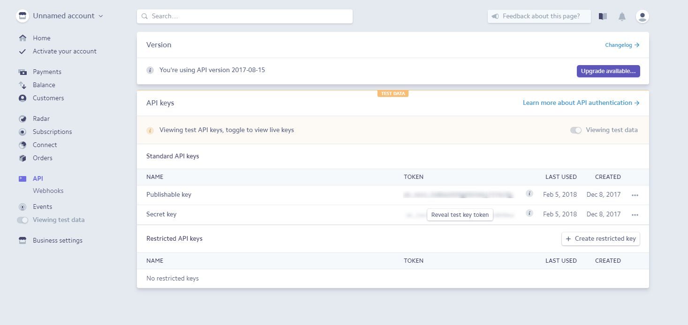

Log in on Stripe's site and go to Dashboard
In the Stripe dashboard, go to API tab, and “Reveal test key token” to get your Secret key (for testing).
 Paste your Secret Key on the Procedure “GetSecretKey()”, in the Stripe folder in your KB.